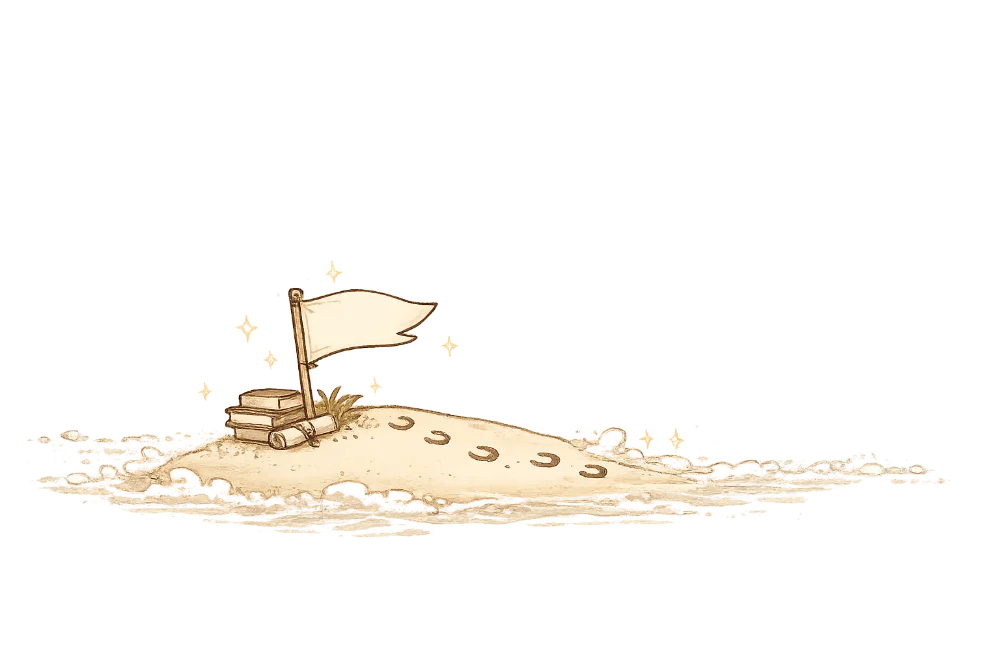

文章封面
系列文章撰寫中
系列文章撰寫中
策略思維

曾身為非本科系考生的我，深刻了解盲目苦讀的無助。每次能在短時間內上岸，靠的不是天賦，而是正確、可重複穩定執行的「輸入與輸出方法」。這是一套可以被理解，且能實際落地應用的備考邏輯。


用 15 分鐘盤點目前的備考狀態，找出最需要優先調整的地方。
如果你已經準備一段時間，卻不知道問題究竟出在讀書方法、時間配置，還是答題方式，60 分鐘的一對一診斷諮詢，會從你目前的實際備考狀況開始，一起找出最需要優先調整的地方。
✦在這 60 分鐘的諮詢中，我們將梳理：
從考試表現找出強弱科盲點及上榜策略。
揪出你「讀了就忘、答題卡關」的底層原因。
根據前面的分析，整理接下來優先調整的讀書時間、方法與備考策略。



每週分享國考讀書方法、申論練習、時間安排與應試策略，以及我在備考與上榜經驗裡整理出的實用方法。